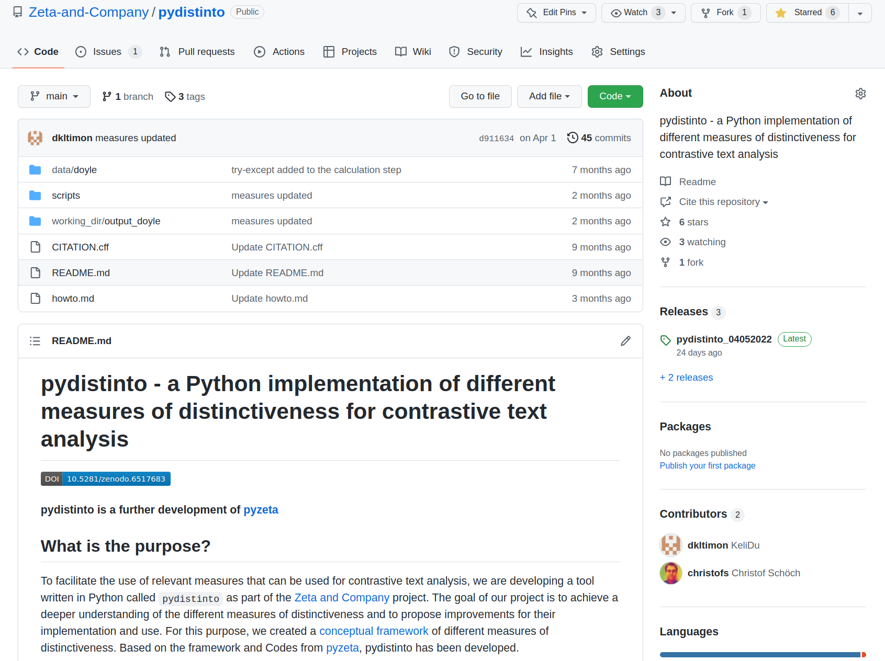
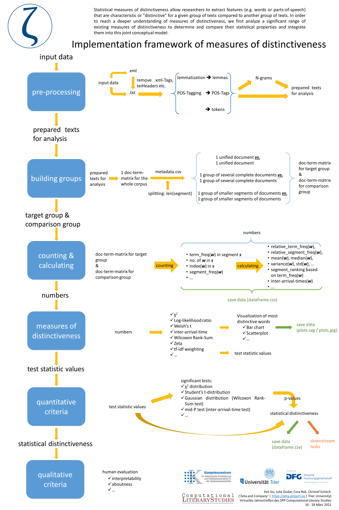

# Zeta and Company: Investigating Measures of Distinctiveness for Computational Literary Studies <img data-src="img/basics/zeta-logo.png" height="100"></img> <br/> **Christof Schöch, Julia Dudar and Keli Du** <br/> *** Oberseminar Computerlinguistik, FAU Erlangen, July 13, 2022 <br/>https://zeta-project.eu/en/ *** <img data-src="img/basics/dfg-logo.jpg" height="30"></img> <img data-src="img/basics/tcdh-slim.png" height="35"></img> <img data-src="img/basics/uni-trier.png" height="35"></img> <img data-src="img/basics/spp2207.png" height="40"></img> :: - Welcome to this presentation - I present today, but of course all of this is teamwork - Particularly greatful to Julia Dudar and Keli Du - I will start with an overview on our project, then Keli and Julia will talk in more detail about some of our results. -- ### Overview 1. [Zeta and Company: Bisher](#/2) 1. [Zeta and Company: Nächste Schritte](#/3) 1. [Zeta and Company: Beyond Words](#/4) :: - I will talk about the project in three simple steps; - basically, past, present and future. -- ## (2) Zeta and company:<br/>Bisher --- ### Ziele * Eine Schlüssel-Strategie der Geisteswissenschaften algorithmisch unterstützen: das Vergleichen<br/>(e.g. Comp. Lit., SFB 1288 Praktiken des Vergleichens, Klimek/Müller 2015) <!-- .element: class="fragment fade-in-then-semi-out" data-fragment-index="1" --> * Modellieren, verstehen, implementieren, evaluieren und verwenden<br/>einer Vielfalt an Keyness- oder Distinktivitätsmaßen <!-- .element: class="fragment fade-in-then-semi-out" data-fragment-index="2" --> * Eine einheitliche Implementierung, um Ergebnisse gut vergleichbar ;-) zu machen <!-- .element: class="fragment fade-in-then-semi-out" data-fragment-index="3" --> * Für CLS relevante Referenz-Datensätze verwenden: Untergattungen des Romans <!-- .element: class="fragment fade-in-then-semi-out" data-fragment-index="4" --> * Ergebnis: Beschreibungen und Empfehlungen für die Nutzung verschiedener Maße <!-- .element: class="fragment fade-in-then-semi-out" data-fragment-index="5" --> :: - AVL: Comparative Literature - SFB 1288: "Praktiken des Vergleichens" in Bochum --- ### Korpusaufbau: Französischer Roman <img data-src="img/roman20-line.png" height="180"> * Zeitgenösissche französische Romane, ca. 1950-2000 <!-- .element: class="fragment fade-in-then-semi-out" data-fragment-index="1" --> * Bisher 1300+ Romane digitalisiert (scannen, OCR, XML) <!-- .element: class="fragment fade-in-then-semi-out" data-fragment-index="2" --> * Aktuelles balanciertes Referenzkorpus: 2x4x40=320 Romane <!-- .element: class="fragment fade-in-then-semi-out" data-fragment-index="3" --> * Wird durch gezieltes Schließen von Lücken wachsen <!-- .element: class="fragment fade-in-then-semi-out" data-fragment-index="4" --> --- ### Verfügbar als "Abgeleitetes Textformat" <img data-src="img/derived.png" height="300"> <img data-src="img/derived-example.png" height="300"> https://github.com/Zeta-and-Company/derived-formats * Standard-Annotation (Tokens) <!-- .element: class="fragment fade-in-then-semi-out" data-fragment-index="1" --> * Segmentweise randomisierung der Reihenfolge (50 tokens) <!-- .element: class="fragment fade-in-then-semi-out" data-fragment-index="2" --> * Nützlich für Stilometrie, Topic Modeling, Distinctivität <!-- .element: class="fragment fade-in-then-semi-out" data-fragment-index="3" --> :: - Incipit von Sortie d'usine im Original: "Une gare s'il faut situer, laquelle n'importe il est tôt, sept heures un peu plus, c'est nuit encore." --- ### Implementierung: pydistinto (DHd2022)   https://github.com/Zeta-and-Company/pydistinto * Gemeinsames konzeptuelles Modell für alle Maße <!-- .element: class="fragment fade-in-then-semi-out" data-fragment-index="1" --> * Implementiert derzeit 9 Maße (Häufigkeit, Distribution, Dispersion) <!-- .element: class="fragment fade-in-then-semi-out" data-fragment-index="2" --> * Viele Parameter: Merkmale, Segmentlänge, Maß u.a.) <!-- .element: class="fragment fade-in-then-semi-out" data-fragment-index="3" --> --- ### Zeta and Eta (CHR 2021) <img data-src="img/zeta-eta.png" height="250"> <img data-src="img/zeta-eta-frequency.png" height="250"> * Zeta (Burrows) und Eta (basierende auf Gries' DP) <!-- .element: class="fragment fade-in-then-semi-out" data-fragment-index="1" --> * Eta identifiziert tendenziell spezifischere Begriffe als Zeta <!-- .element: class="fragment fade-in-then-semi-out" data-fragment-index="2" --> * Je länger die Segmente sind, desto stärker ist dieser Unterschied <!-- .element: class="fragment fade-in-then-semi-out" data-fragment-index="3" --> :: Hierzu wird Keli gleich noch mehr sagen. --- ### Evaluation: classification task (CCLS 2022) <img data-src="img/jcls.png" height="320"> <a href="img/jcls-fig4.png"><img data-src="img/jcls-fig4.png" height="320"></a> <br/> <br/> * Kernergebnis: Maße, die auf Distribution oder Dispersion basieren, sind in bestimmten Konstellationen (kurze Wortlisten) den Häufigkeits-basierten Maßen vorzuziehen <!-- .element: class="fragment fade-in-then-semi-out" data-fragment-index="1" --> :: - Hierzu sagt Juli gleich noch mehr. --- ### Theorizing about Evaluation (JLT 2021) <img data-src="img/jlt2021.png" height="320"> <br/> <br/> * Es ist ein Fehler, ein bestimmtes Maß zur Definition von Keyness / Distinktivität zu verwenden <!-- .element: class="fragment fade-in-then-semi-out" data-fragment-index="1" --> * Ein qualitatives Verständnis und eine Explikation / Operationalisierung sind notwendig <!-- .element: class="fragment fade-in-then-semi-out" data-fragment-index="2" --> * Dieses bietet dann eine Referenz für eine Evaluation <!-- .element: class="fragment fade-in-then-semi-out" data-fragment-index="3" --> * Definition: (inhaltliche) Aboutness vs. (kognitive) Salienz vs. diskriminatorische Kraft <!-- .element: class="fragment fade-in-then-semi-out" data-fragment-index="4" --> -- ## (3) Zeta and company:<br/>Nächste Schritte --- ### Zusammenfassung * Replikation des "uniformity of p-values" Tests (Lijffijt et al.) <!-- .element: class="fragment fade-in-then-semi-out" data-fragment-index="1" --> * Evaluation mit synthetischen Texten und künstlichen Features <!-- .element: class="fragment fade-in-then-semi-out" data-fragment-index="2" --> * Anwendungsstudie (zeitgenössischer französischer Roman) <!-- .element: class="fragment fade-in-then-semi-out" data-fragment-index="3" --> --- ### Uniformity of p-values <img data-src="img/lijffijt-uniformity.png" height="450"> Lijffijt et al. 2014: "Significance testing of word frequencies in corpora", DSH. :: - Versuch, die Beobachtungen von Lijffijjt zu replizieren - Aber auch mit unseren Maßen, wie Zeta oder Eta - Bisher: Ähnliche Trends, aber deutlich höheres Niveau der "rejected words" (Korpusabhängig?) --- ### Evaluation mit synthetischen Texten * 320 synthetische Texte: <!-- .element: class="fragment fade-in-then-semi-out" data-fragment-index="1" --> * zufällig gewählte, annotierte Wörter * Subgenre-neutrale Texte unterschiedlicher Länge * Strategie zur Evaluation <!-- .element: class="fragment fade-in-then-semi-out" data-fragment-index="2" --> * Niveau der zufälligen Variation der Werte feststellen * Gezielt künstliche Tokens mit bekannter Häufigkeit und Dispersion hinzufügen * Prüfen, welche Maße welche Art von Tokens vom Hintergrundrauschen unterscheiden können --- ### Anwendungsstudie <img data-src="img/corpus-subgenres.png" height="250"> * 2-3 robuste, unterschiedliche Maße auf das Romankorpus anwenden <!-- .element: class="fragment fade-in-then-semi-out" data-fragment-index="1" --> * Forschungsfragen <!-- .element: class="fragment fade-in-then-semi-out" data-fragment-index="2" --> * Wie viel literaturwissenschaftlich Relevantes lässt sich aus den Ergebnissen über die Untergattungen sagen? * Welchen Beitrag können die Ergebnisse zu einer qualitativen Evaluation der Maße beitragen? -- ## (4) Zeta and company:<br/>Beyond Words --- ### Beyond Words * Ziel: komplexe / semantische Merkmale identifizieren, die für eine Untergattung charakteristisch sind <!-- .element: class="fragment fade-in-then-semi-out" data-fragment-index="1" --> * Ein Verfahren für das Erstellen expliziter, detaillierter, systematischer Profile von Untergattungen entwickeln <!-- .element: class="fragment fade-in-then-semi-out" data-fragment-index="2" --> * Eine bedeutungsvolle, interpretative Verbindung zwischen diesen beiden "Seiten" finden <!-- .element: class="fragment fade-in-then-semi-out" data-fragment-index="3" --> -- ### Danke! <img height="500" data-src="img/basics/danke.png"> <!-- .element: class="fragment fade-in-then-semi-out" data-fragment-index="1" --> :: - So viel von mir als Einführung ins Projekt - Jetzt vertiefen Keli und Julia einige Aspekte - Und dann können wir gerne diskutieren! --- ### References <small> * **References** * Keli Du, Julia Dudar, Christof Schöch: “Evaluation of measures of distinctiveness: Classification of literary texts on the basis of distinctive words”. 1st Annual Conference for Computational Literary Studies. Darmstadt, June 1-2, 2022. – URL: https://jcls.io/site/conference/. * Keli Du, Julia Dudar, Cora Rok, Christof Schöch. “Kontrastive Textanalyse mit pydistinto – Ein Python-Paket zur Nutzung unterschiedlicher Distinktivitätsmaße” [Poster]. In: DHd 2022 Kulturen des digitalen Gedächtnisses. 8. Tagung des Verbands “Digital Humanities im deutschsprachigen Raum” (DHd2022), hg. Michaela Geierhos, Peer Trilcke, Ingo Börner, Sabine Seifert, Anna Busch und Patrick Helling. Potsdam, 2022. DOI: 10.5281/zenodo.6327966. * Keli Du, Julia Dudar, Cora Rok, Christof Schöch: “Zeta & Eta: An Exploration and Evaluation of two Dispersion-based Measures of Distinctiveness”. Computational Humanities Research 2021 (CHR2021). 17-19 Nov 2021, online. http://ceur-ws.org/Vol-2989/short_paper11.pdf * Julian Schröter, Keli Du, Julia Dudar, Cora Rok, Christof Schöch: “From Keyness to Distinctiveness. Triangulation and Evaluation in Computational Literary Studies”. Journal of Literary Theory 15/1-2, 2021, 81-110. DOI: 10.1515/jlt-2021-2011. * Keli Du, Julia Dudar, Cora Rok, Christof Schöch: “Inspecteur, embrasser, planète, Paris. Distinktivitätsmaße für die Analyse literarischer Subgenres. Interpretierbarkeit, Generalisierbarkeit, Erkenntniswert”. Sektion Digital, global, transdisziplinär: Impulse für eine transdisziplinäre Digitale Romanistik , org. Jan Rohden, Nanette Rißler-Pipka, José Calvo Tello, Romanistentag 2021, 4-7 Oct 2021. * **Links** * Slides: https://Zeta-and-Company.github.io/gm2022/ * Licence: [Creative Commons Attribution 4.0 International (CC BY)](https://creativecommons.org/licenses/by/4.0/) </small>